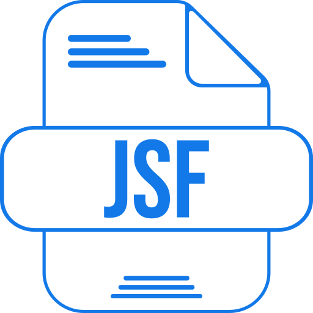
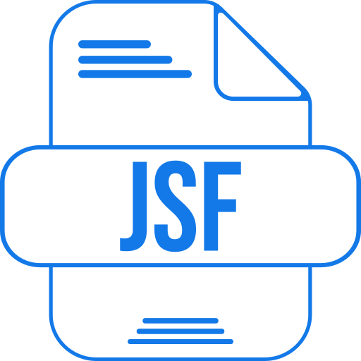

Hola, soy José y soy ingeniero de sistemas
Apasionado por las bases de datos y el análisis de datos
Apasionado por las bases de datos y el análisis de datos
Futuro ingeniero de sistemas comprometido con su aprendizaje y la implementación de buenas prácticas en el desarrollo de software. Me motiva seguir aprendiendo, especialmente en el área de bases de datos y análisis de datos.
 


Desarrollé una aplicación web utilizando Java con Spring Boot, HTML, CSS y MySQL como base de datos. Este proyecto tiene como objetivo recrear un sitio para pescadores donde pueden explorar lugares de pesca, acceder a rankings, y conocer diferentes tipos de peces.
En este proyecto, presento tres proyectos personales realizados con Power BI, donde se emplea un conjunto de datos en Excel. Utilicé herramientas de ETL (Extraer, Transformar y Cargar) para preparar y analizar los datos, permitiendo una visualización efectiva de la información.
Utilicé APEX, una herramienta de Oracle para la creación de páginas web y bases de datos. A diferencia de otros proyectos, aquí me enfoqué en PL/SQL, el lenguaje propio de Oracle, aplicando diversos objetos. Puedes acceder a la aplicación mediante el siguiente enlace: Acceder a APEX (Credenciales: Usuario: PANDA, Contraseña: Panda8989).

Desarrollé una aplicación sencilla en JavaScript, HTML y CSS para calcular la segmentación de redes IP. Esta herramienta es especialmente útil para crear clústeres en empresas o entornos físicos. Puedes probarla aquí: Calculadora de Segmentación de Redes.
Creé una aplicación que permite encriptar y desencriptar palabras utilizando reglas predeterminadas, también desarrollada con JavaScript. Accede a la aplicación aquí: Encriptar y Desencriptar Textos. Este proyecto básico me sirvió como base para un proyecto más avanzado en el que estoy trabajando actualmente, enfocado en la creación de una bolsa de valores.
He trabajado con Oracle Cloud Infrastructure, gestionando bases de datos autónomas. A pesar de que he tenido que eliminar algunas aplicaciones debido a limitaciones de espacio y costos, aquí te comparto un enlace sobre la presentación que realicé en clase relacionada con el uso de OCI.
Actualmente, estoy colaborando en un proyecto de gestión de tareas con un profesor en la universidad, involucrando a tres cursos de ingeniería. Al finalizar, planeo adjuntar este trabajo, que está diseñado para optimizar la gestión del tiempo y la organización de diferentes proyectos en cualquier área de trabajo, utilizando la herramienta JIRA.
 LinkedIn
LinkedIn